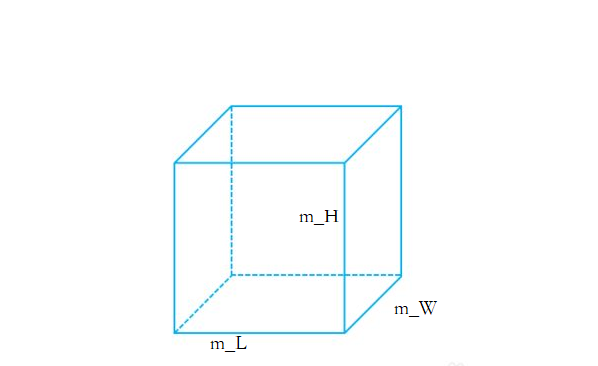
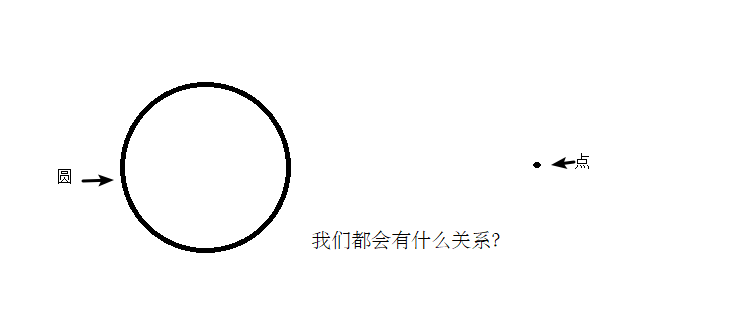

C++核心编程
本阶段主要针对C++面向对象编程技术做详细讲解，探讨C++中的核心和精髓。
1 内存分区模型
C++程序在执行时，将内存大方向划分为4个区域
- 代码区：存放函数体的二进制代码，由操作系统进行管理的
- 全局区：存放全局变量和静态变量以及常量
- 栈区：由编译器自动分配释放, 存放函数的参数值,局部变量等
- 堆区：由程序员分配和释放,若程序员不释放,程序结束时由操作系统回收
内存四区意义：
不同区域存放的数据，赋予不同的生命周期, 给我们更大的灵活编程
1.1 程序运行前
在程序编译后，生成了exe可执行程序，未执行该程序前分为两个区域
代码区：
存放 CPU 执行的机器指令
代码区是共享的，共享的目的是对于频繁被执行的程序，只需要在内存中有一份代码即可
代码区是只读的，使其只读的原因是防止程序意外地修改了它的指令
全局区：
全局变量和静态变量存放在此.
全局区还包含了常量区, 字符串常量和其他常量也存放在此.
该区域的数据在程序结束后由操作系统释放.
示例：
xxxxxxxxxx431//全局变量2int g_a = 10;3int g_b = 10;4
5//全局常量6const int c_g_a = 10;7const int c_g_b = 10;8
9int main() {10
11 //局部变量12 int a = 10;13 int b = 10;14
15 //打印地址16 cout << "局部变量a地址为： " << (int)&a << endl;17 cout << "局部变量b地址为： " << (int)&b << endl;18
19 cout << "全局变量g_a地址为： " << (int)&g_a << endl;20 cout << "全局变量g_b地址为： " << (int)&g_b << endl;21
22 //静态变量23 static int s_a = 10;24 static int s_b = 10;25
26 cout << "静态变量s_a地址为： " << (int)&s_a << endl;27 cout << "静态变量s_b地址为： " << (int)&s_b << endl;28
29 cout << "字符串常量地址为： " << (int)&"hello world" << endl;30 cout << "字符串常量地址为： " << (int)&"hello world1" << endl;31
32 cout << "全局常量c_g_a地址为： " << (int)&c_g_a << endl;33 cout << "全局常量c_g_b地址为： " << (int)&c_g_b << endl;34
35 const int c_l_a = 10;36 const int c_l_b = 10;37 cout << "局部常量c_l_a地址为： " << (int)&c_l_a << endl;38 cout << "局部常量c_l_b地址为： " << (int)&c_l_b << endl;39
40 system("pause");41
42 return 0;43}打印结果：

总结：
- C++中在程序运行前分为全局区和代码区
- 代码区特点是共享和只读
- 全局区中存放全局变量、静态变量、常量
- 常量区中存放 const修饰的全局常量 和 字符串常量
1.2 程序运行后
栈区：
由编译器自动分配释放, 存放函数的参数值,局部变量等
注意事项：不要返回局部变量的地址，栈区开辟的数据由编译器自动释放
示例：
xxxxxxxxxx171int * func()2{3 int a = 10;4 return &a;5}6
7int main() {8
9 int *p = func();10
11 cout << *p << endl;12 cout << *p << endl;13
14 system("pause");15
16 return 0;17}
堆区：
由程序员分配释放,若程序员不释放,程序结束时由操作系统回收
在C++中主要利用new在堆区开辟内存
示例：
xxxxxxxxxx171int* func()2{3 int* a = new int(10);4 return a;5}6
7int main() {8
9 int *p = func();10
11 cout << *p << endl;12 cout << *p << endl;13 14 system("pause");15
16 return 0;17}
总结：
堆区数据由程序员管理开辟和释放
堆区数据利用new关键字进行开辟内存
1.3 new操作符
C++中利用new操作符在堆区开辟数据
堆区开辟的数据，由程序员手动开辟，手动释放，释放利用操作符 delete
语法：new 数据类型
利用new创建的数据，会返回该数据对应的类型的指针
示例1： 基本语法
xxxxxxxxxx221int* func()2{3 int* a = new int(10);4 return a;5}6
7int main() {8
9 int *p = func();10
11 cout << *p << endl;12 cout << *p << endl;13
14 //利用delete释放堆区数据15 delete p;16
17 //cout << *p << endl; //报错，释放的空间不可访问18
19 system("pause");20
21 return 0;22}
示例2：开辟数组
xxxxxxxxxx221//堆区开辟数组2int main() {3
4 int* arr = new int[10];5
6 for (int i = 0; i < 10; i++)7 {8 arr[i] = i + 100;9 }10
11 for (int i = 0; i < 10; i++)12 {13 cout << arr[i] << endl;14 }15 //释放数组 delete 后加 []16 delete[] arr;17
18 system("pause");19
20 return 0;21}22
2 引用
2.1 引用的基本使用
作用： 给变量起别名
语法： 数据类型 &别名 = 原名
示例：
xxxxxxxxxx171int main() {2
3 int a = 10;4 int &b = a;5
6 cout << "a = " << a << endl;7 cout << "b = " << b << endl;8
9 b = 100;10
11 cout << "a = " << a << endl;12 cout << "b = " << b << endl;13
14 system("pause");15
16 return 0;17}
2.2 引用注意事项
- 引用必须初始化
- 引用在初始化后，不可以改变
示例：
xxxxxxxxxx161int main() {2
3 int a = 10;4 int b = 20;5 //int &c; //错误，引用必须初始化6 int &c = a; //一旦初始化后，就不可以更改7 c = b; //这是赋值操作，不是更改引用8
9 cout << "a = " << a << endl;10 cout << "b = " << b << endl;11 cout << "c = " << c << endl;12
13 system("pause");14
15 return 0;16}
2.3 引用做函数参数
作用：函数传参时，可以利用引用的技术让形参修饰实参
优点：可以简化指针修改实参
示例：
xxxxxxxxxx401//1. 值传递2void mySwap01(int a, int b) {3 int temp = a;4 a = b;5 b = temp;6}7
8//2. 地址传递9void mySwap02(int* a, int* b) {10 int temp = *a;11 *a = *b;12 *b = temp;13}14
15//3. 引用传递16void mySwap03(int& a, int& b) {17 int temp = a;18 a = b;19 b = temp;20}21
22int main() {23
24 int a = 10;25 int b = 20;26
27 mySwap01(a, b);28 cout << "a:" << a << " b:" << b << endl;29
30 mySwap02(&a, &b);31 cout << "a:" << a << " b:" << b << endl;32
33 mySwap03(a, b);34 cout << "a:" << a << " b:" << b << endl;35
36 system("pause");37
38 return 0;39}40
总结：通过引用参数产生的效果同按地址传递是一样的。引用的语法更清楚简单
2.4 引用做函数返回值
作用：引用是可以作为函数的返回值存在的
注意：不要返回局部变量引用
用法：函数调用作为左值
示例：
xxxxxxxxxx331//返回局部变量引用2int& test01() {3 int a = 10; //局部变量4 return a;5}6
7//返回静态变量引用8int& test02() {9 static int a = 20;10 return a;11}12
13int main() {14
15 //不能返回局部变量的引用16 int& ref = test01();17 cout << "ref = " << ref << endl;18 cout << "ref = " << ref << endl;19
20 //如果函数做左值，那么必须返回引用21 int& ref2 = test02();22 cout << "ref2 = " << ref2 << endl;23 cout << "ref2 = " << ref2 << endl;24
25 test02() = 1000;26
27 cout << "ref2 = " << ref2 << endl;28 cout << "ref2 = " << ref2 << endl;29
30 system("pause");31
32 return 0;33}
2.5 引用的本质
本质：引用的本质在c++内部实现是一个指针常量.
讲解示例：
xxxxxxxxxx171//发现是引用，转换为 int* const ref = &a;2void func(int& ref){3 ref = 100; // ref是引用，转换为*ref = 1004}5int main(){6 int a = 10;7 8 //自动转换为 int* const ref = &a; 指针常量是指针指向不可改，也说明为什么引用不可更改9 int& ref = a; 10 ref = 20; //内部发现ref是引用，自动帮我们转换为: *ref = 20;11 12 cout << "a:" << a << endl;13 cout << "ref:" << ref << endl;14 15 func(a);16 return 0;17}结论：C++推荐用引用技术，因为语法方便，引用本质是指针常量，但是所有的指针操作编译器都帮我们做了
2.6 常量引用
作用：常量引用主要用来修饰形参，防止误操作
在函数形参列表中，可以加const修饰形参，防止形参改变实参
示例：
xxxxxxxxxx231//引用使用的场景，通常用来修饰形参2void showValue(const int& v) {3 //v += 10;4 cout << v << endl;5}6
7int main() {8
9 //int& ref = 10; 引用本身需要一个合法的内存空间，因此这行错误10 //加入const就可以了，编译器优化代码，int temp = 10; const int& ref = temp;11 const int& ref = 10;12
13 //ref = 100; //加入const后不可以修改变量14 cout << ref << endl;15
16 //函数中利用常量引用防止误操作修改实参17 int a = 10;18 showValue(a);19
20 system("pause");21
22 return 0;23}
3 函数提高
3.1 函数默认参数
在C++中，函数的形参列表中的形参是可以有默认值的。
语法：返回值类型 函数名 （参数= 默认值）{}
示例：
xxxxxxxxxx201int func(int a, int b = 10, int c = 10) {2 return a + b + c;3}4
5//1. 如果某个位置参数有默认值，那么从这个位置往后，从左向右，必须都要有默认值6//2. 如果函数声明有默认值，函数实现的时候就不能有默认参数7int func2(int a = 10, int b = 10);8int func2(int a, int b) {9 return a + b;10}11
12int main() {13
14 cout << "ret = " << func(20, 20) << endl;15 cout << "ret = " << func(100) << endl;16
17 system("pause");18
19 return 0;20}
3.2 函数占位参数
C++中函数的形参列表里可以有占位参数，用来做占位，调用函数时必须填补该位置
语法： 返回值类型 函数名 (数据类型){}
在现阶段函数的占位参数存在意义不大，但是后面的课程中会用到该技术
示例：
xxxxxxxxxx131//函数占位参数 ，占位参数也可以有默认参数2void func(int a, int) {3 cout << "this is func" << endl;4}5
6int main() {7
8 func(10,10); //占位参数必须填补9
10 system("pause");11
12 return 0;13}
3.3 函数重载
3.3.1 函数重载概述
作用：函数名可以相同，提高复用性
函数重载满足条件：
- 同一个作用域下
- 函数名称相同
- 函数参数类型不同 或者 个数不同 或者 顺序不同
注意: 函数的返回值不可以作为函数重载的条件
示例：
xxxxxxxxxx411//函数重载需要函数都在同一个作用域下2void func()3{4 cout << "func 的调用！" << endl;5}6void func(int a)7{8 cout << "func (int a) 的调用！" << endl;9}10void func(double a)11{12 cout << "func (double a)的调用！" << endl;13}14void func(int a ,double b)15{16 cout << "func (int a ,double b) 的调用！" << endl;17}18void func(double a ,int b)19{20 cout << "func (double a ,int b)的调用！" << endl;21}22
23//函数返回值不可以作为函数重载条件24//int func(double a, int b)25//{26// cout << "func (double a ,int b)的调用！" << endl;27//}28
29
30int main() {31
32 func();33 func(10);34 func(3.14);35 func(10,3.14);36 func(3.14 , 10);37 38 system("pause");39
40 return 0;41}
3.3.2 函数重载注意事项
- 引用作为重载条件
- 函数重载碰到函数默认参数
示例：
xxxxxxxxxx391//函数重载注意事项2//1、引用作为重载条件3
4void func(int &a)5{6 cout << "func (int &a) 调用 " << endl;7}8
9void func(const int &a)10{11 cout << "func (const int &a) 调用 " << endl;12}13
14
15//2、函数重载碰到函数默认参数16
17void func2(int a, int b = 10)18{19 cout << "func2(int a, int b = 10) 调用" << endl;20}21
22void func2(int a)23{24 cout << "func2(int a) 调用" << endl;25}26
27int main() {28 29 int a = 10;30 func(a); //调用无const31 func(10);//调用有const32
33
34 //func2(10); //碰到默认参数产生歧义，需要避免35
36 system("pause");37
38 return 0;39}
4 类和对象
C++面向对象的三大特性为：封装、继承、多态
C++认为万事万物都皆为对象，对象上有其属性和行为
例如：
人可以作为对象，属性有姓名、年龄、身高、体重...，行为有走、跑、跳、吃饭、唱歌...
车也可以作为对象，属性有轮胎、方向盘、车灯...,行为有载人、放音乐、放空调...
具有相同性质的对象，我们可以抽象称为类，人属于人类，车属于车类
4.1 封装
4.1.1 封装的意义
封装是C++面向对象三大特性之一
封装的意义：
- 将属性和行为作为一个整体，表现生活中的事物
- 将属性和行为加以权限控制
封装意义一：
在设计类的时候，属性和行为写在一起，表现事物
语法： class 类名{ 访问权限： 属性 / 行为 };
示例1：设计一个圆类，求圆的周长
示例代码：
xxxxxxxxxx391//圆周率2const double PI = 3.14;3
4//1、封装的意义5//将属性和行为作为一个整体，用来表现生活中的事物6
7//封装一个圆类，求圆的周长8//class代表设计一个类，后面跟着的是类名9class Circle10{11public: //访问权限 公共的权限12
13 //属性14 int m_r;//半径15
16 //行为17 //获取到圆的周长18 double calculateZC()19 {20 //2 * pi * r21 //获取圆的周长22 return 2 * PI * m_r;23 }24};25
26int main() {27
28 //通过圆类，创建圆的对象29 // c1就是一个具体的圆30 Circle c1;31 c1.m_r = 10; //给圆对象的半径 进行赋值操作32
33 //2 * pi * 10 = = 62.834 cout << "圆的周长为： " << c1.calculateZC() << endl;35
36 system("pause");37
38 return 0;39}
示例2：设计一个学生类，属性有姓名和学号，可以给姓名和学号赋值，可以显示学生的姓名和学号
示例2代码：
xxxxxxxxxx301//学生类2class Student {3public:4 void setName(string name) {5 m_name = name;6 }7 void setID(int id) {8 m_id = id;9 }10
11 void showStudent() {12 cout << "name:" << m_name << " ID:" << m_id << endl;13 }14public:15 string m_name;16 int m_id;17};18
19int main() {20
21 Student stu;22 stu.setName("德玛西亚");23 stu.setID(250);24 stu.showStudent();25
26 system("pause");27
28 return 0;29}30
封装意义二：
类在设计时，可以把属性和行为放在不同的权限下，加以控制
访问权限有三种：
- public 公共权限
- protected 保护权限
- private 私有权限
示例：
xxxxxxxxxx391//三种权限2//公共权限 public 类内可以访问 类外可以访问3//保护权限 protected 类内可以访问 类外不可以访问4//私有权限 private 类内可以访问 类外不可以访问5
6class Person7{8 //姓名 公共权限9public:10 string m_Name;11
12 //汽车 保护权限13protected:14 string m_Car;15
16 //银行卡密码 私有权限17private:18 int m_Password;19
20public:21 void func()22 {23 m_Name = "张三";24 m_Car = "拖拉机";25 m_Password = 123456;26 }27};28
29int main() {30
31 Person p;32 p.m_Name = "李四";33 //p.m_Car = "奔驰"; //保护权限类外访问不到34 //p.m_Password = 123; //私有权限类外访问不到35
36 system("pause");37
38 return 0;39}
4.1.2 struct和class区别
在C++中 struct和class唯一的区别就在于 默认的访问权限不同
区别：
- struct 默认权限为公共
- class 默认权限为私有
xxxxxxxxxx221class C12{3 int m_A; //默认是私有权限4};5
6struct C27{8 int m_A; //默认是公共权限9};10
11int main() {12
13 C1 c1;14 c1.m_A = 10; //错误，访问权限是私有15
16 C2 c2;17 c2.m_A = 10; //正确，访问权限是公共18
19 system("pause");20
21 return 0;22}
4.1.3 成员属性设置为私有
优点1：将所有成员属性设置为私有，可以自己控制读写权限
优点2：对于写权限，我们可以检测数据的有效性
示例：
xxxxxxxxxx591class Person {2public:3
4 //姓名设置可读可写5 void setName(string name) {6 m_Name = name;7 }8 string getName()9 {10 return m_Name;11 }12
13
14 //获取年龄 15 int getAge() {16 return m_Age;17 }18 //设置年龄19 void setAge(int age) {20 if (age < 0 || age > 150) {21 cout << "你个老妖精!" << endl;22 return;23 }24 m_Age = age;25 }26
27 //情人设置为只写28 void setLover(string lover) {29 m_Lover = lover;30 }31
32private:33 string m_Name; //可读可写 姓名34 35 int m_Age; //只读 年龄36
37 string m_Lover; //只写 情人38};39
40
41int main() {42
43 Person p;44 //姓名设置45 p.setName("张三");46 cout << "姓名： " << p.getName() << endl;47
48 //年龄设置49 p.setAge(50);50 cout << "年龄： " << p.getAge() << endl;51
52 //情人设置53 p.setLover("苍井");54 //cout << "情人： " << p.m_Lover << endl; //只写属性，不可以读取55
56 system("pause");57
58 return 0;59}
练习案例1：设计立方体类
设计立方体类(Cube)
求出立方体的面积和体积
分别用全局函数和成员函数判断两个立方体是否相等。

练习案例2：点和圆的关系
设计一个圆形类（Circle），和一个点类（Point），计算点和圆的关系。

4.2 对象的初始化和清理
- 生活中我们买的电子产品都基本会有出厂设置，在某一天我们不用时候也会删除一些自己信息数据保证安全
- C++中的面向对象来源于生活，每个对象也都会有初始设置以及 对象销毁前的清理数据的设置。
4.2.1 构造函数和析构函数
对象的初始化和清理也是两个非常重要的安全问题
一个对象或者变量没有初始状态，对其使用后果是未知
同样的使用完一个对象或变量，没有及时清理，也会造成一定的安全问题
c++利用了构造函数和析构函数解决上述问题，这两个函数将会被编译器自动调用，完成对象初始化和清理工作。
对象的初始化和清理工作是编译器强制要我们做的事情，因此如果我们不提供构造和析构，编译器会提供
编译器提供的构造函数和析构函数是空实现。
- 构造函数：主要作用在于创建对象时为对象的成员属性赋值，构造函数由编译器自动调用，无须手动调用。
- 析构函数：主要作用在于对象销毁前系统自动调用，执行一些清理工作。
构造函数语法：类名(){}
- 构造函数，没有返回值也不写void
- 函数名称与类名相同
- 构造函数可以有参数，因此可以发生重载
- 程序在调用对象时候会自动调用构造，无须手动调用,而且只会调用一次
析构函数语法： ~类名(){}
- 析构函数，没有返回值也不写void
- 函数名称与类名相同,在名称前加上符号 ~
- 析构函数不可以有参数，因此不可以发生重载
- 程序在对象销毁前会自动调用析构，无须手动调用,而且只会调用一次
xxxxxxxxxx291class Person2{3public:4 //构造函数5 Person()6 {7 cout << "Person的构造函数调用" << endl;8 }9 //析构函数10 ~Person()11 {12 cout << "Person的析构函数调用" << endl;13 }14
15};16
17void test01()18{19 Person p;20}21
22int main() {23 24 test01();25
26 system("pause");27
28 return 0;29}
4.2.2 构造函数的分类及调用
两种分类方式：
按参数分为： 有参构造和无参构造
按类型分为： 普通构造和拷贝构造
三种调用方式：
括号法
显示法
隐式转换法
示例：
xxxxxxxxxx641//1、构造函数分类2// 按照参数分类分为 有参和无参构造 无参又称为默认构造函数3// 按照类型分类分为 普通构造和拷贝构造4
5class Person {6public:7 //无参（默认）构造函数8 Person() {9 cout << "无参构造函数!" << endl;10 }11 //有参构造函数12 Person(int a) {13 age = a;14 cout << "有参构造函数!" << endl;15 }16 //拷贝构造函数17 Person(const Person& p) {18 age = p.age;19 cout << "拷贝构造函数!" << endl;20 }21 //析构函数22 ~Person() {23 cout << "析构函数!" << endl;24 }25public:26 int age;27};28
29//2、构造函数的调用30//调用无参构造函数31void test01() {32 Person p; //调用无参构造函数33}34
35//调用有参的构造函数36void test02() {37
38 //2.1 括号法，常用39 Person p1(10);40 //注意1：调用无参构造函数不能加括号，如果加了编译器认为这是一个函数声明41 //Person p2();42
43 //2.2 显式法44 Person p2 = Person(10); 45 Person p3 = Person(p2);46 //Person(10)单独写就是匿名对象 当前行结束之后，马上析构47
48 //2.3 隐式转换法49 Person p4 = 10; // Person p4 = Person(10); 50 Person p5 = p4; // Person p5 = Person(p4); 51
52 //注意2：不能利用 拷贝构造函数 初始化匿名对象 编译器认为是对象声明53 //Person p5(p4);54}55
56int main() {57
58 test01();59 //test02();60
61 system("pause");62
63 return 0;64}
4.2.3 拷贝构造函数调用时机
C++中拷贝构造函数调用时机通常有三种情况
- 使用一个已经创建完毕的对象来初始化一个新对象
- 值传递的方式给函数参数传值
- 以值方式返回局部对象
示例：
xxxxxxxxxx661class Person {2public:3 Person() {4 cout << "无参构造函数!" << endl;5 mAge = 0;6 }7 Person(int age) {8 cout << "有参构造函数!" << endl;9 mAge = age;10 }11 Person(const Person& p) {12 cout << "拷贝构造函数!" << endl;13 mAge = p.mAge;14 }15 //析构函数在释放内存之前调用16 ~Person() {17 cout << "析构函数!" << endl;18 }19public:20 int mAge;21};22
23//1. 使用一个已经创建完毕的对象来初始化一个新对象24void test01() {25
26 Person man(100); //p对象已经创建完毕27 Person newman(man); //调用拷贝构造函数28 Person newman2 = man; //拷贝构造29
30 //Person newman3;31 //newman3 = man; //不是调用拷贝构造函数，赋值操作32}33
34//2. 值传递的方式给函数参数传值35//相当于Person p1 = p;36void doWork(Person p1) {}37void test02() {38 Person p; //无参构造函数39 doWork(p);40}41
42//3. 以值方式返回局部对象43Person doWork2()44{45 Person p1;46 cout << (int *)&p1 << endl;47 return p1;48}49
50void test03()51{52 Person p = doWork2();53 cout << (int *)&p << endl;54}55
56
57int main() {58
59 //test01();60 //test02();61 test03();62
63 system("pause");64
65 return 0;66}
4.2.4 构造函数调用规则
默认情况下，c++编译器至少给一个类添加3个函数
1．默认构造函数(无参，函数体为空)
2．默认析构函数(无参，函数体为空)
3．默认拷贝构造函数，对属性进行值拷贝
构造函数调用规则如下：
- 如果用户定义有参构造函数，c++不在提供默认无参构造，但是会提供默认拷贝构造
- 如果用户定义拷贝构造函数，c++不会再提供其他构造函数
示例：
xxxxxxxxxx541class Person {2public:3 //无参（默认）构造函数4 Person() {5 cout << "无参构造函数!" << endl;6 }7 //有参构造函数8 Person(int a) {9 age = a;10 cout << "有参构造函数!" << endl;11 }12 //拷贝构造函数13 Person(const Person& p) {14 age = p.age;15 cout << "拷贝构造函数!" << endl;16 }17 //析构函数18 ~Person() {19 cout << "析构函数!" << endl;20 }21public:22 int age;23};24
25void test01()26{27 Person p1(18);28 //如果不写拷贝构造，编译器会自动添加拷贝构造，并且做浅拷贝操作29 Person p2(p1);30
31 cout << "p2的年龄为： " << p2.age << endl;32}33
34void test02()35{36 //如果用户提供有参构造，编译器不会提供默认构造，会提供拷贝构造37 Person p1; //此时如果用户自己没有提供默认构造，会出错38 Person p2(10); //用户提供的有参39 Person p3(p2); //此时如果用户没有提供拷贝构造，编译器会提供40
41 //如果用户提供拷贝构造，编译器不会提供其他构造函数42 Person p4; //此时如果用户自己没有提供默认构造，会出错43 Person p5(10); //此时如果用户自己没有提供有参，会出错44 Person p6(p5); //用户自己提供拷贝构造45}46
47int main() {48
49 test01();50
51 system("pause");52
53 return 0;54}
4.2.5 深拷贝与浅拷贝
深浅拷贝是面试经典问题，也是常见的一个坑
浅拷贝：简单的赋值拷贝操作
深拷贝：在堆区重新申请空间，进行拷贝操作
示例：
xxxxxxxxxx561class Person {2public:3 //无参（默认）构造函数4 Person() {5 cout << "无参构造函数!" << endl;6 }7 //有参构造函数8 Person(int age ,int height) {9 10 cout << "有参构造函数!" << endl;11
12 m_age = age;13 m_height = new int(height);14 15 }16 //拷贝构造函数 17 Person(const Person& p) {18 cout << "拷贝构造函数!" << endl;19 //如果不利用深拷贝在堆区创建新内存，会导致浅拷贝带来的重复释放堆区问题20 m_age = p.m_age;21 m_height = new int(*p.m_height);22 23 }24
25 //析构函数26 ~Person() {27 cout << "析构函数!" << endl;28 if (m_height != NULL)29 {30 delete m_height;31 }32 }33public:34 int m_age;35 int* m_height;36};37
38void test01()39{40 Person p1(18, 180);41
42 Person p2(p1);43
44 cout << "p1的年龄： " << p1.m_age << " 身高： " << *p1.m_height << endl;45
46 cout << "p2的年龄： " << p2.m_age << " 身高： " << *p2.m_height << endl;47}48
49int main() {50
51 test01();52
53 system("pause");54
55 return 0;56}总结：如果属性有在堆区开辟的，一定要自己提供拷贝构造函数，防止浅拷贝带来的问题
4.2.6 初始化列表
作用：
C++提供了初始化列表语法，用来初始化属性
语法：构造函数()：属性1(值1),属性2（值2）... {}
示例：
xxxxxxxxxx331class Person {2public:3
4 ////传统方式初始化5 //Person(int a, int b, int c) {6 // m_A = a;7 // m_B = b;8 // m_C = c;9 //}10
11 //初始化列表方式初始化12 Person(int a, int b, int c) :m_A(a), m_B(b), m_C(c) {}13 void PrintPerson() {14 cout << "mA:" << m_A << endl;15 cout << "mB:" << m_B << endl;16 cout << "mC:" << m_C << endl;17 }18private:19 int m_A;20 int m_B;21 int m_C;22};23
24int main() {25
26 Person p(1, 2, 3);27 p.PrintPerson();28
29
30 system("pause");31
32 return 0;33}
4.2.7 类对象作为类成员
C++类中的成员可以是另一个类的对象，我们称该成员为 对象成员
例如：
xxxxxxxxxx51class A {}2class B3{4 A a；5}
B类中有对象A作为成员，A为对象成员
那么当创建B对象时，A与B的构造和析构的顺序是谁先谁后？
示例：
xxxxxxxxxx621class Phone2{3public:4 Phone(string name)5 {6 m_PhoneName = name;7 cout << "Phone构造" << endl;8 }9
10 ~Phone()11 {12 cout << "Phone析构" << endl;13 }14
15 string m_PhoneName;16
17};18
19
20class Person21{22public:23
24 //初始化列表可以告诉编译器调用哪一个构造函数25 Person(string name, string pName) :m_Name(name), m_Phone(pName)26 {27 cout << "Person构造" << endl;28 }29
30 ~Person()31 {32 cout << "Person析构" << endl;33 }34
35 void playGame()36 {37 cout << m_Name << " 使用" << m_Phone.m_PhoneName << " 牌手机! " << endl;38 }39
40 string m_Name;41 Phone m_Phone;42
43};44void test01()45{46 //当类中成员是其他类对象时，我们称该成员为 对象成员47 //构造的顺序是 ：先调用对象成员的构造，再调用本类构造48 //析构顺序与构造相反49 Person p("张三" , "苹果X");50 p.playGame();51
52}53
54
55int main() {56
57 test01();58
59 system("pause");60
61 return 0;62}
4.2.8 静态成员
静态成员就是在成员变量和成员函数前加上关键字static，称为静态成员
静态成员分为：
静态成员变量
- 所有对象共享同一份数据
- 在编译阶段分配内存
- 类内声明，类外初始化
静态成员函数
- 所有对象共享同一个函数
- 静态成员函数只能访问静态成员变量
示例1 ：静态成员变量
xxxxxxxxxx471class Person2{3 4public:5
6 static int m_A; //静态成员变量7
8 //静态成员变量特点：9 //1 在编译阶段分配内存10 //2 类内声明，类外初始化11 //3 所有对象共享同一份数据12
13private:14 static int m_B; //静态成员变量也是有访问权限的15};16int Person::m_A = 10;17int Person::m_B = 10;18
19void test01()20{21 //静态成员变量两种访问方式22
23 //1、通过对象24 Person p1;25 p1.m_A = 100;26 cout << "p1.m_A = " << p1.m_A << endl;27
28 Person p2;29 p2.m_A = 200;30 cout << "p1.m_A = " << p1.m_A << endl; //共享同一份数据31 cout << "p2.m_A = " << p2.m_A << endl;32
33 //2、通过类名34 cout << "m_A = " << Person::m_A << endl;35
36
37 //cout << "m_B = " << Person::m_B << endl; //私有权限访问不到38}39
40int main() {41
42 test01();43
44 system("pause");45
46 return 0;47}
示例2：静态成员函数
xxxxxxxxxx521class Person2{3
4public:5
6 //静态成员函数特点：7 //1 程序共享一个函数8 //2 静态成员函数只能访问静态成员变量9 10 static void func()11 {12 cout << "func调用" << endl;13 m_A = 100;14 //m_B = 100; //错误，不可以访问非静态成员变量15 }16
17 static int m_A; //静态成员变量18 int m_B; // 19private:20
21 //静态成员函数也是有访问权限的22 static void func2()23 {24 cout << "func2调用" << endl;25 }26};27int Person::m_A = 10;28
29
30void test01()31{32 //静态成员变量两种访问方式33
34 //1、通过对象35 Person p1;36 p1.func();37
38 //2、通过类名39 Person::func();40
41
42 //Person::func2(); //私有权限访问不到43}44
45int main() {46
47 test01();48
49 system("pause");50
51 return 0;52}
4.3 C++对象模型和this指针
4.3.1 成员变量和成员函数分开存储
在C++中，类内的成员变量和成员函数分开存储
只有非静态成员变量才属于类的对象上
xxxxxxxxxx261class Person {2public:3 Person() {4 mA = 0;5 }6 //非静态成员变量占对象空间7 int mA;8 //静态成员变量不占对象空间9 static int mB; 10 //函数也不占对象空间，所有函数共享一个函数实例11 void func() {12 cout << "mA:" << this->mA << endl;13 }14 //静态成员函数也不占对象空间15 static void sfunc() {16 }17};18
19int main() {20
21 cout << sizeof(Person) << endl;22
23 system("pause");24
25 return 0;26}
4.3.2 this指针概念
通过4.3.1我们知道在C++中成员变量和成员函数是分开存储的
每一个非静态成员函数只会诞生一份函数实例，也就是说多个同类型的对象会共用一块代码
那么问题是：这一块代码是如何区分那个对象调用自己的呢？
c++通过提供特殊的对象指针，this指针，解决上述问题。this指针指向被调用的成员函数所属的对象
this指针是隐含每一个非静态成员函数内的一种指针
this指针不需要定义，直接使用即可
this指针的用途：
- 当形参和成员变量同名时，可用this指针来区分
- 在类的非静态成员函数中返回对象本身，可使用return *this
xxxxxxxxxx381class Person2{3public:4
5 Person(int age)6 {7 //1、当形参和成员变量同名时，可用this指针来区分8 this->age = age;9 }10
11 Person& PersonAddPerson(Person p)12 {13 this->age += p.age;14 //返回对象本身15 return *this;16 }17
18 int age;19};20
21void test01()22{23 Person p1(10);24 cout << "p1.age = " << p1.age << endl;25
26 Person p2(10);27 p2.PersonAddPerson(p1).PersonAddPerson(p1).PersonAddPerson(p1);28 cout << "p2.age = " << p2.age << endl;29}30
31int main() {32
33 test01();34
35 system("pause");36
37 return 0;38}
4.3.3 空指针访问成员函数
C++中空指针也是可以调用成员函数的，但是也要注意有没有用到this指针
如果用到this指针，需要加以判断保证代码的健壮性
示例：
xxxxxxxxxx341//空指针访问成员函数2class Person {3public:4
5 void ShowClassName() {6 cout << "我是Person类!" << endl;7 }8
9 void ShowPerson() {10 if (this == NULL) {11 return;12 }13 cout << mAge << endl;14 }15
16public:17 int mAge;18};19
20void test01()21{22 Person * p = NULL;23 p->ShowClassName(); //空指针，可以调用成员函数24 p->ShowPerson(); //但是如果成员函数中用到了this指针，就不可以了25}26
27int main() {28
29 test01();30
31 system("pause");32
33 return 0;34}
4.3.4 const修饰成员函数
常函数：
- 成员函数后加const后我们称为这个函数为常函数
- 常函数内不可以修改成员属性
- 成员属性声明时加关键字mutable后，在常函数中依然可以修改
常对象：
- 声明对象前加const称该对象为常对象
- 常对象只能调用常函数
示例：
xxxxxxxxxx491class Person {2public:3 Person() {4 m_A = 0;5 m_B = 0;6 }7
8 //this指针的本质是一个指针常量，指针的指向不可修改9 //如果想让指针指向的值也不可以修改，需要声明常函数10 void ShowPerson() const {11 //const Type* const pointer;12 //this = NULL; //不能修改指针的指向 Person* const this;13 //this->mA = 100; //但是this指针指向的对象的数据是可以修改的14
15 //const修饰成员函数，表示指针指向的内存空间的数据不能修改，除了mutable修饰的变量16 this->m_B = 100;17 }18
19 void MyFunc() const {20 //mA = 10000;21 }22
23public:24 int m_A;25 mutable int m_B; //可修改 可变的26};27
28
29//const修饰对象 常对象30void test01() {31
32 const Person person; //常量对象 33 cout << person.m_A << endl;34 //person.mA = 100; //常对象不能修改成员变量的值,但是可以访问35 person.m_B = 100; //但是常对象可以修改mutable修饰成员变量36
37 //常对象访问成员函数38 person.MyFunc(); //常对象不能调用const的函数39
40}41
42int main() {43
44 test01();45
46 system("pause");47
48 return 0;49}
4.4 友元
生活中你的家有客厅(Public)，有你的卧室(Private)
客厅所有来的客人都可以进去，但是你的卧室是私有的，也就是说只有你能进去
但是呢，你也可以允许你的好闺蜜好基友进去。
在程序里，有些私有属性 也想让类外特殊的一些函数或者类进行访问，就需要用到友元的技术
友元的目的就是让一个函数或者类 访问另一个类中私有成员
友元的关键字为 friend
友元的三种实现
- 全局函数做友元
- 类做友元
- 成员函数做友元
4.4.1 全局函数做友元
xxxxxxxxxx421class Building2{3 //告诉编译器 goodGay全局函数 是 Building类的好朋友，可以访问类中的私有内容4 friend void goodGay(Building * building);5
6public:7
8 Building()9 {10 this->m_SittingRoom = "客厅";11 this->m_BedRoom = "卧室";12 }13
14
15public:16 string m_SittingRoom; //客厅17
18private:19 string m_BedRoom; //卧室20};21
22
23void goodGay(Building * building)24{25 cout << "好基友正在访问： " << building->m_SittingRoom << endl;26 cout << "好基友正在访问： " << building->m_BedRoom << endl;27}28
29
30void test01()31{32 Building b;33 goodGay(&b);34}35
36int main(){37
38 test01();39
40 system("pause");41 return 0;42}
4.4.2 类做友元
xxxxxxxxxx581class Building;2class goodGay3{4public:5
6 goodGay();7 void visit();8
9private:10 Building *building;11};12
13
14class Building15{16 //告诉编译器 goodGay类是Building类的好朋友，可以访问到Building类中私有内容17 friend class goodGay;18
19public:20 Building();21
22public:23 string m_SittingRoom; //客厅24private:25 string m_BedRoom;//卧室26};27
28Building::Building()29{30 this->m_SittingRoom = "客厅";31 this->m_BedRoom = "卧室";32}33
34goodGay::goodGay()35{36 building = new Building;37}38
39void goodGay::visit()40{41 cout << "好基友正在访问" << building->m_SittingRoom << endl;42 cout << "好基友正在访问" << building->m_BedRoom << endl;43}44
45void test01()46{47 goodGay gg;48 gg.visit();49
50}51
52int main(){53
54 test01();55
56 system("pause");57 return 0;58}
4.4.3 成员函数做友元
xxxxxxxxxx661
2class Building;3class goodGay4{5public:6
7 goodGay();8 void visit(); //只让visit函数作为Building的好朋友，可以发访问Building中私有内容9 void visit2(); 10
11private:12 Building *building;13};14
15
16class Building17{18 //告诉编译器 goodGay类中的visit成员函数 是Building好朋友，可以访问私有内容19 friend void goodGay::visit();20
21public:22 Building();23
24public:25 string m_SittingRoom; //客厅26private:27 string m_BedRoom;//卧室28};29
30Building::Building()31{32 this->m_SittingRoom = "客厅";33 this->m_BedRoom = "卧室";34}35
36goodGay::goodGay()37{38 building = new Building;39}40
41void goodGay::visit()42{43 cout << "好基友正在访问" << building->m_SittingRoom << endl;44 cout << "好基友正在访问" << building->m_BedRoom << endl;45}46
47void goodGay::visit2()48{49 cout << "好基友正在访问" << building->m_SittingRoom << endl;50 //cout << "好基友正在访问" << building->m_BedRoom << endl;51}52
53void test01()54{55 goodGay gg;56 gg.visit();57
58}59
60int main(){61 62 test01();63
64 system("pause");65 return 0;66}
4.5 运算符重载
运算符重载概念：对已有的运算符重新进行定义，赋予其另一种功能，以适应不同的数据类型
4.5.1 加号运算符重载
作用：实现两个自定义数据类型相加的运算
xxxxxxxxxx621class Person {2public:3 Person() {};4 Person(int a, int b)5 {6 this->m_A = a;7 this->m_B = b;8 }9 //成员函数实现 + 号运算符重载10 Person operator+(const Person& p) {11 Person temp;12 temp.m_A = this->m_A + p.m_A;13 temp.m_B = this->m_B + p.m_B;14 return temp;15 }16
17
18public:19 int m_A;20 int m_B;21};22
23//全局函数实现 + 号运算符重载24//Person operator+(const Person& p1, const Person& p2) {25// Person temp(0, 0);26// temp.m_A = p1.m_A + p2.m_A;27// temp.m_B = p1.m_B + p2.m_B;28// return temp;29//}30
31//运算符重载 可以发生函数重载 32Person operator+(const Person& p2, int val) 33{34 Person temp;35 temp.m_A = p2.m_A + val;36 temp.m_B = p2.m_B + val;37 return temp;38}39
40void test() {41
42 Person p1(10, 10);43 Person p2(20, 20);44
45 //成员函数方式46 Person p3 = p2 + p1; //相当于 p2.operaor+(p1)47 cout << "mA:" << p3.m_A << " mB:" << p3.m_B << endl;48
49
50 Person p4 = p3 + 10; //相当于 operator+(p3,10)51 cout << "mA:" << p4.m_A << " mB:" << p4.m_B << endl;52
53}54
55int main() {56
57 test();58
59 system("pause");60
61 return 0;62}
总结1：对于内置的数据类型的表达式的的运算符是不可能改变的
总结2：不要滥用运算符重载
4.5.2 左移运算符重载
作用：可以输出自定义数据类型
xxxxxxxxxx421class Person {2 friend ostream& operator<<(ostream& out, Person& p);3
4public:5
6 Person(int a, int b)7 {8 this->m_A = a;9 this->m_B = b;10 }11
12 //成员函数 实现不了 p << cout 不是我们想要的效果13 //void operator<<(Person& p){14 //}15
16private:17 int m_A;18 int m_B;19};20
21//全局函数实现左移重载22//ostream对象只能有一个23ostream& operator<<(ostream& out, Person& p) {24 out << "a:" << p.m_A << " b:" << p.m_B;25 return out;26}27
28void test() {29
30 Person p1(10, 20);31
32 cout << p1 << "hello world" << endl; //链式编程33}34
35int main() {36
37 test();38
39 system("pause");40
41 return 0;42}
总结：重载左移运算符配合友元可以实现输出自定义数据类型
4.5.3 递增运算符重载
作用： 通过重载递增运算符，实现自己的整型数据
xxxxxxxxxx601
2class MyInteger {3
4 friend ostream& operator<<(ostream& out, MyInteger myint);5
6public:7 MyInteger() {8 m_Num = 0;9 }10 //前置++11 MyInteger& operator++() {12 //先++13 m_Num++;14 //再返回15 return *this;16 }17
18 //后置++19 MyInteger operator++(int) {20 //先返回21 MyInteger temp = *this; //记录当前本身的值，然后让本身的值加1，但是返回的是以前的值，达到先返回后++；22 m_Num++;23 return temp;24 }25
26private:27 int m_Num;28};29
30
31ostream& operator<<(ostream& out, MyInteger myint) {32 out << myint.m_Num;33 return out;34}35
36
37//前置++ 先++ 再返回38void test01() {39 MyInteger myInt;40 cout << ++myInt << endl;41 cout << myInt << endl;42}43
44//后置++ 先返回 再++45void test02() {46
47 MyInteger myInt;48 cout << myInt++ << endl;49 cout << myInt << endl;50}51
52int main() {53
54 test01();55 //test02();56
57 system("pause");58
59 return 0;60}
总结： 前置递增返回引用，后置递增返回值
4.5.4 赋值运算符重载
c++编译器至少给一个类添加4个函数
- 默认构造函数(无参，函数体为空)
- 默认析构函数(无参，函数体为空)
- 默认拷贝构造函数，对属性进行值拷贝
- 赋值运算符 operator=, 对属性进行值拷贝
如果类中有属性指向堆区，做赋值操作时也会出现深浅拷贝问题
示例：
xxxxxxxxxx781class Person2{3public:4
5 Person(int age)6 {7 //将年龄数据开辟到堆区8 m_Age = new int(age);9 }10
11 //重载赋值运算符 12 Person& operator=(Person &p)13 {14 if (m_Age != NULL)15 {16 delete m_Age;17 m_Age = NULL;18 }19 //编译器提供的代码是浅拷贝20 //m_Age = p.m_Age;21
22 //提供深拷贝 解决浅拷贝的问题23 m_Age = new int(*p.m_Age);24
25 //返回自身26 return *this;27 }28
29
30 ~Person()31 {32 if (m_Age != NULL)33 {34 delete m_Age;35 m_Age = NULL;36 }37 }38
39 //年龄的指针40 int *m_Age;41
42};43
44
45void test01()46{47 Person p1(18);48
49 Person p2(20);50
51 Person p3(30);52
53 p3 = p2 = p1; //赋值操作54
55 cout << "p1的年龄为：" << *p1.m_Age << endl;56
57 cout << "p2的年龄为：" << *p2.m_Age << endl;58
59 cout << "p3的年龄为：" << *p3.m_Age << endl;60}61
62int main() {63
64 test01();65
66 //int a = 10;67 //int b = 20;68 //int c = 30;69
70 //c = b = a;71 //cout << "a = " << a << endl;72 //cout << "b = " << b << endl;73 //cout << "c = " << c << endl;74
75 system("pause");76
77 return 0;78}
4.5.5 关系运算符重载
作用：重载关系运算符，可以让两个自定义类型对象进行对比操作
示例：
xxxxxxxxxx731class Person2{3public:4 Person(string name, int age)5 {6 this->m_Name = name;7 this->m_Age = age;8 };9
10 bool operator==(Person & p)11 {12 if (this->m_Name == p.m_Name && this->m_Age == p.m_Age)13 {14 return true;15 }16 else17 {18 return false;19 }20 }21
22 bool operator!=(Person & p)23 {24 if (this->m_Name == p.m_Name && this->m_Age == p.m_Age)25 {26 return false;27 }28 else29 {30 return true;31 }32 }33
34 string m_Name;35 int m_Age;36};37
38void test01()39{40 //int a = 0;41 //int b = 0;42
43 Person a("孙悟空", 18);44 Person b("孙悟空", 18);45
46 if (a == b)47 {48 cout << "a和b相等" << endl;49 }50 else51 {52 cout << "a和b不相等" << endl;53 }54
55 if (a != b)56 {57 cout << "a和b不相等" << endl;58 }59 else60 {61 cout << "a和b相等" << endl;62 }63}64
65
66int main() {67
68 test01();69
70 system("pause");71
72 return 0;73}
4.5.6 函数调用运算符重载
- 函数调用运算符 () 也可以重载
- 由于重载后使用的方式非常像函数的调用，因此称为仿函数
- 仿函数没有固定写法，非常灵活
示例：
xxxxxxxxxx451class MyPrint2{3public:4 void operator()(string text)5 {6 cout << text << endl;7 }8
9};10void test01()11{12 //重载的（）操作符 也称为仿函数13 MyPrint myFunc;14 myFunc("hello world");15}16
17
18class MyAdd19{20public:21 int operator()(int v1, int v2)22 {23 return v1 + v2;24 }25};26
27void test02()28{29 MyAdd add;30 int ret = add(10, 10);31 cout << "ret = " << ret << endl;32
33 //匿名对象调用 34 cout << "MyAdd()(100,100) = " << MyAdd()(100, 100) << endl;35}36
37int main() {38
39 test01();40 test02();41
42 system("pause");43
44 return 0;45}
4.6 继承
继承是面向对象三大特性之一
有些类与类之间存在特殊的关系，例如下图中：

我们发现，定义这些类时，下级别的成员除了拥有上一级的共性，还有自己的特性。
这个时候我们就可以考虑利用继承的技术，减少重复代码
4.6.1 继承的基本语法
例如我们看到很多网站中，都有公共的头部，公共的底部，甚至公共的左侧列表，只有中心内容不同
接下来我们分别利用普通写法和继承的写法来实现网页中的内容，看一下继承存在的意义以及好处
普通实现：
xxxxxxxxxx1021//Java页面2class Java 3{4public:5 void header()6 {7 cout << "首页、公开课、登录、注册...（公共头部）" << endl;8 }9 void footer()10 {11 cout << "帮助中心、交流合作、站内地图...(公共底部)" << endl;12 }13 void left()14 {15 cout << "Java,Python,C++...(公共分类列表)" << endl;16 }17 void content()18 {19 cout << "JAVA学科视频" << endl;20 }21};22//Python页面23class Python24{25public:26 void header()27 {28 cout << "首页、公开课、登录、注册...（公共头部）" << endl;29 }30 void footer()31 {32 cout << "帮助中心、交流合作、站内地图...(公共底部)" << endl;33 }34 void left()35 {36 cout << "Java,Python,C++...(公共分类列表)" << endl;37 }38 void content()39 {40 cout << "Python学科视频" << endl;41 }42};43//C++页面44class CPP 45{46public:47 void header()48 {49 cout << "首页、公开课、登录、注册...（公共头部）" << endl;50 }51 void footer()52 {53 cout << "帮助中心、交流合作、站内地图...(公共底部)" << endl;54 }55 void left()56 {57 cout << "Java,Python,C++...(公共分类列表)" << endl;58 }59 void content()60 {61 cout << "C++学科视频" << endl;62 }63};64
65void test01()66{67 //Java页面68 cout << "Java下载视频页面如下： " << endl;69 Java ja;70 ja.header();71 ja.footer();72 ja.left();73 ja.content();74 cout << "--------------------" << endl;75
76 //Python页面77 cout << "Python下载视频页面如下： " << endl;78 Python py;79 py.header();80 py.footer();81 py.left();82 py.content();83 cout << "--------------------" << endl;84
85 //C++页面86 cout << "C++下载视频页面如下： " << endl;87 CPP cp;88 cp.header();89 cp.footer();90 cp.left();91 cp.content();92
93}94
95int main() {96
97 test01();98
99 system("pause");100
101 return 0;102}
继承实现：
xxxxxxxxxx871//公共页面2class BasePage3{4public:5 void header()6 {7 cout << "首页、公开课、登录、注册...（公共头部）" << endl;8 }9
10 void footer()11 {12 cout << "帮助中心、交流合作、站内地图...(公共底部)" << endl;13 }14 void left()15 {16 cout << "Java,Python,C++...(公共分类列表)" << endl;17 }18
19};20
21//Java页面22class Java : public BasePage23{24public:25 void content()26 {27 cout << "JAVA学科视频" << endl;28 }29};30//Python页面31class Python : public BasePage32{33public:34 void content()35 {36 cout << "Python学科视频" << endl;37 }38};39//C++页面40class CPP : public BasePage41{42public:43 void content()44 {45 cout << "C++学科视频" << endl;46 }47};48
49void test01()50{51 //Java页面52 cout << "Java下载视频页面如下： " << endl;53 Java ja;54 ja.header();55 ja.footer();56 ja.left();57 ja.content();58 cout << "--------------------" << endl;59
60 //Python页面61 cout << "Python下载视频页面如下： " << endl;62 Python py;63 py.header();64 py.footer();65 py.left();66 py.content();67 cout << "--------------------" << endl;68
69 //C++页面70 cout << "C++下载视频页面如下： " << endl;71 CPP cp;72 cp.header();73 cp.footer();74 cp.left();75 cp.content();76
77
78}79
80int main() {81
82 test01();83
84 system("pause");85
86 return 0;87}
总结：
继承的好处：可以减少重复的代码
class A : public B;
A 类称为子类 或 派生类
B 类称为父类 或 基类
派生类中的成员，包含两大部分：
一类是从基类继承过来的，一类是自己增加的成员。
从基类继承过过来的表现其共性，而新增的成员体现了其个性。
4.6.2 继承方式
继承的语法：class 子类 : 继承方式 父类
继承方式一共有三种：
- 公共继承
- 保护继承
- 私有继承

示例：
xxxxxxxxxx851class Base12{3public: 4 int m_A;5protected:6 int m_B;7private:8 int m_C;9};10
11//公共继承12class Son1 :public Base113{14public:15 void func()16 {17 m_A; //可访问 public权限18 m_B; //可访问 protected权限19 //m_C; //不可访问20 }21};22
23void myClass()24{25 Son1 s1;26 s1.m_A; //其他类只能访问到公共权限27}28
29//保护继承30class Base231{32public:33 int m_A;34protected:35 int m_B;36private:37 int m_C;38};39class Son2:protected Base240{41public:42 void func()43 {44 m_A; //可访问 protected权限45 m_B; //可访问 protected权限46 //m_C; //不可访问47 }48};49void myClass2()50{51 Son2 s;52 //s.m_A; //不可访问53}54
55//私有继承56class Base357{58public:59 int m_A;60protected:61 int m_B;62private:63 int m_C;64};65class Son3:private Base366{67public:68 void func()69 {70 m_A; //可访问 private权限71 m_B; //可访问 private权限72 //m_C; //不可访问73 }74};75class GrandSon3 :public Son376{77public:78 void func()79 {80 //Son3是私有继承，所以继承Son3的属性在GrandSon3中都无法访问到81 //m_A;82 //m_B;83 //m_C;84 }85};
4.6.3 继承中的对象模型
问题：从父类继承过来的成员，哪些属于子类对象中？
示例：
xxxxxxxxxx301class Base2{3public:4 int m_A;5protected:6 int m_B;7private:8 int m_C; //私有成员只是被隐藏了，但是还是会继承下去9};10
11//公共继承12class Son :public Base13{14public:15 int m_D;16};17
18void test01()19{20 cout << "sizeof Son = " << sizeof(Son) << endl;21}22
23int main() {24
25 test01();26
27 system("pause");28
29 return 0;30}
利用工具查看：

打开工具窗口后，定位到当前CPP文件的盘符
然后输入： cl /d1 reportSingleClassLayout查看的类名 所属文件名
效果如下图：

结论： 父类中私有成员也是被子类继承下去了，只是由编译器给隐藏后访问不到
4.6.4 继承中构造和析构顺序
子类继承父类后，当创建子类对象，也会调用父类的构造函数
问题：父类和子类的构造和析构顺序是谁先谁后？
示例：
xxxxxxxxxx421class Base 2{3public:4 Base()5 {6 cout << "Base构造函数!" << endl;7 }8 ~Base()9 {10 cout << "Base析构函数!" << endl;11 }12};13
14class Son : public Base15{16public:17 Son()18 {19 cout << "Son构造函数!" << endl;20 }21 ~Son()22 {23 cout << "Son析构函数!" << endl;24 }25
26};27
28
29void test01()30{31 //继承中 先调用父类构造函数，再调用子类构造函数，析构顺序与构造相反32 Son s;33}34
35int main() {36
37 test01();38
39 system("pause");40
41 return 0;42}
总结：继承中 先调用父类构造函数，再调用子类构造函数，析构顺序与构造相反
4.6.5 继承同名成员处理方式
问题：当子类与父类出现同名的成员，如何通过子类对象，访问到子类或父类中同名的数据呢？
- 访问子类同名成员 直接访问即可
- 访问父类同名成员 需要加作用域
示例：
xxxxxxxxxx581class Base {2public:3 Base()4 {5 m_A = 100;6 }7
8 void func()9 {10 cout << "Base - func()调用" << endl;11 }12
13 void func(int a)14 {15 cout << "Base - func(int a)调用" << endl;16 }17
18public:19 int m_A;20};21
22
23class Son : public Base {24public:25 Son()26 {27 m_A = 200;28 }29
30 //当子类与父类拥有同名的成员函数，子类会隐藏父类中所有版本的同名成员函数31 //如果想访问父类中被隐藏的同名成员函数，需要加父类的作用域32 void func()33 {34 cout << "Son - func()调用" << endl;35 }36public:37 int m_A;38};39
40void test01()41{42 Son s;43
44 cout << "Son下的m_A = " << s.m_A << endl;45 cout << "Base下的m_A = " << s.Base::m_A << endl;46
47 s.func();48 s.Base::func();49 s.Base::func(10);50
51}52int main() {53
54 test01();55
56 system("pause");57 return EXIT_SUCCESS;58}总结：
- 子类对象可以直接访问到子类中同名成员
- 子类对象加作用域可以访问到父类同名成员
- 当子类与父类拥有同名的成员函数，子类会隐藏父类中同名成员函数，加作用域可以访问到父类中同名函数
4.6.6 继承同名静态成员处理方式
问题：继承中同名的静态成员在子类对象上如何进行访问？
静态成员和非静态成员出现同名，处理方式一致
- 访问子类同名成员 直接访问即可
- 访问父类同名成员 需要加作用域
示例：
xxxxxxxxxx661class Base {2public:3 static void func()4 {5 cout << "Base - static void func()" << endl;6 }7 static void func(int a)8 {9 cout << "Base - static void func(int a)" << endl;10 }11
12 static int m_A;13};14
15int Base::m_A = 100;16
17class Son : public Base {18public:19 static void func()20 {21 cout << "Son - static void func()" << endl;22 }23 static int m_A;24};25
26int Son::m_A = 200;27
28//同名成员属性29void test01()30{31 //通过对象访问32 cout << "通过对象访问： " << endl;33 Son s;34 cout << "Son 下 m_A = " << s.m_A << endl;35 cout << "Base 下 m_A = " << s.Base::m_A << endl;36
37 //通过类名访问38 cout << "通过类名访问： " << endl;39 cout << "Son 下 m_A = " << Son::m_A << endl;40 cout << "Base 下 m_A = " << Son::Base::m_A << endl;41}42
43//同名成员函数44void test02()45{46 //通过对象访问47 cout << "通过对象访问： " << endl;48 Son s;49 s.func();50 s.Base::func();51
52 cout << "通过类名访问： " << endl;53 Son::func();54 Son::Base::func();55 //出现同名，子类会隐藏掉父类中所有同名成员函数，需要加作作用域访问56 Son::Base::func(100);57}58int main() {59
60 //test01();61 test02();62
63 system("pause");64
65 return 0;66}总结：同名静态成员处理方式和非静态处理方式一样，只不过有两种访问的方式（通过对象 和 通过类名）
4.6.7 多继承语法
C++允许一个类继承多个类
语法：class 子类 ：继承方式 父类1 ， 继承方式 父类2...
多继承可能会引发父类中有同名成员出现，需要加作用域区分
C++实际开发中不建议用多继承
示例：
xxxxxxxxxx531class Base1 {2public:3 Base1()4 {5 m_A = 100;6 }7public:8 int m_A;9};10
11class Base2 {12public:13 Base2()14 {15 m_A = 200; //开始是m_B 不会出问题，但是改为mA就会出现不明确16 }17public:18 int m_A;19};20
21//语法：class 子类：继承方式 父类1 ，继承方式 父类2 22class Son : public Base2, public Base1 23{24public:25 Son()26 {27 m_C = 300;28 m_D = 400;29 }30public:31 int m_C;32 int m_D;33};34
35
36//多继承容易产生成员同名的情况37//通过使用类名作用域可以区分调用哪一个基类的成员38void test01()39{40 Son s;41 cout << "sizeof Son = " << sizeof(s) << endl;42 cout << s.Base1::m_A << endl;43 cout << s.Base2::m_A << endl;44}45
46int main() {47
48 test01();49
50 system("pause");51
52 return 0;53}
总结： 多继承中如果父类中出现了同名情况，子类使用时候要加作用域
4.6.8 菱形继承
菱形继承概念：
两个派生类继承同一个基类
又有某个类同时继承者两个派生类
这种继承被称为菱形继承，或者钻石继承
典型的菱形继承案例：

菱形继承问题：
- 羊继承了动物的数据，驼同样继承了动物的数据，当草泥马使用数据时，就会产生二义性。
- 草泥马继承自动物的数据继承了两份，其实我们应该清楚，这份数据我们只需要一份就可以。
示例：
xxxxxxxxxx321class Animal2{3public:4 int m_Age;5};6
7//继承前加virtual关键字后，变为虚继承8//此时公共的父类Animal称为虚基类9class Sheep : virtual public Animal {};10class Tuo : virtual public Animal {};11class SheepTuo : public Sheep, public Tuo {};12
13void test01()14{15 SheepTuo st;16 st.Sheep::m_Age = 100;17 st.Tuo::m_Age = 200;18
19 cout << "st.Sheep::m_Age = " << st.Sheep::m_Age << endl;20 cout << "st.Tuo::m_Age = " << st.Tuo::m_Age << endl;21 cout << "st.m_Age = " << st.m_Age << endl;22}23
24
25int main() {26
27 test01();28
29 system("pause");30
31 return 0;32}
总结：
- 菱形继承带来的主要问题是子类继承两份相同的数据，导致资源浪费以及毫无意义
- 利用虚继承可以解决菱形继承问题
4.7 多态
4.7.1 多态的基本概念
多态是C++面向对象三大特性之一
多态分为两类
- 静态多态: 函数重载 和 运算符重载属于静态多态，复用函数名
- 动态多态: 派生类和虚函数实现运行时多态
静态多态和动态多态区别：
- 静态多态的函数地址早绑定 - 编译阶段确定函数地址
- 动态多态的函数地址晚绑定 - 运行阶段确定函数地址
下面通过案例进行讲解多态
xxxxxxxxxx641class Animal2{3public:4 //Speak函数就是虚函数5 //函数前面加上virtual关键字，变成虚函数，那么编译器在编译的时候就不能确定函数调用了。6 virtual void speak()7 {8 cout << "动物在说话" << endl;9 }10};11
12class Cat :public Animal13{14public:15 void speak()16 {17 cout << "小猫在说话" << endl;18 }19};20
21class Dog :public Animal22{23public:24
25 void speak()26 {27 cout << "小狗在说话" << endl;28 }29
30};31//我们希望传入什么对象，那么就调用什么对象的函数32//如果函数地址在编译阶段就能确定，那么静态联编33//如果函数地址在运行阶段才能确定，就是动态联编34
35void DoSpeak(Animal & animal)36{37 animal.speak();38}39//40//多态满足条件： 41//1、有继承关系42//2、子类重写父类中的虚函数43//多态使用：44//父类指针或引用指向子类对象45
46void test01()47{48 Cat cat;49 DoSpeak(cat);50
51
52 Dog dog;53 DoSpeak(dog);54}55
56
57int main() {58
59 test01();60
61 system("pause");62
63 return 0;64}总结：
多态满足条件
- 有继承关系
- 子类重写父类中的虚函数
多态使用条件
- 父类指针或引用指向子类对象
重写：函数返回值类型 函数名 参数列表 完全一致称为重写
4.7.2 多态案例一-计算器类
案例描述：
分别利用普通写法和多态技术，设计实现两个操作数进行运算的计算器类
多态的优点：
- 代码组织结构清晰
- 可读性强
- 利于前期和后期的扩展以及维护
示例：
xxxxxxxxxx1171//普通实现2class Calculator {3public:4 int getResult(string oper)5 {6 if (oper == "+") {7 return m_Num1 + m_Num2;8 }9 else if (oper == "-") {10 return m_Num1 - m_Num2;11 }12 else if (oper == "*") {13 return m_Num1 * m_Num2;14 }15 //如果要提供新的运算，需要修改源码16 }17public:18 int m_Num1;19 int m_Num2;20};21
22void test01()23{24 //普通实现测试25 Calculator c;26 c.m_Num1 = 10;27 c.m_Num2 = 10;28 cout << c.m_Num1 << " + " << c.m_Num2 << " = " << c.getResult("+") << endl;29
30 cout << c.m_Num1 << " - " << c.m_Num2 << " = " << c.getResult("-") << endl;31
32 cout << c.m_Num1 << " * " << c.m_Num2 << " = " << c.getResult("*") << endl;33}34
35
36
37//多态实现38//抽象计算器类39//多态优点：代码组织结构清晰，可读性强，利于前期和后期的扩展以及维护40class AbstractCalculator41{42public :43
44 virtual int getResult()45 {46 return 0;47 }48
49 int m_Num1;50 int m_Num2;51};52
53//加法计算器54class AddCalculator :public AbstractCalculator55{56public:57 int getResult()58 {59 return m_Num1 + m_Num2;60 }61};62
63//减法计算器64class SubCalculator :public AbstractCalculator65{66public:67 int getResult()68 {69 return m_Num1 - m_Num2;70 }71};72
73//乘法计算器74class MulCalculator :public AbstractCalculator75{76public:77 int getResult()78 {79 return m_Num1 * m_Num2;80 }81};82
83
84void test02()85{86 //创建加法计算器87 AbstractCalculator *abc = new AddCalculator;88 abc->m_Num1 = 10;89 abc->m_Num2 = 10;90 cout << abc->m_Num1 << " + " << abc->m_Num2 << " = " << abc->getResult() << endl;91 delete abc; //用完了记得销毁92
93 //创建减法计算器94 abc = new SubCalculator;95 abc->m_Num1 = 10;96 abc->m_Num2 = 10;97 cout << abc->m_Num1 << " - " << abc->m_Num2 << " = " << abc->getResult() << endl;98 delete abc; 99
100 //创建乘法计算器101 abc = new MulCalculator;102 abc->m_Num1 = 10;103 abc->m_Num2 = 10;104 cout << abc->m_Num1 << " * " << abc->m_Num2 << " = " << abc->getResult() << endl;105 delete abc;106}107
108int main() {109
110 //test01();111
112 test02();113
114 system("pause");115
116 return 0;117}总结：C++开发提倡利用多态设计程序架构，因为多态优点很多
4.7.3 纯虚函数和抽象类
在多态中，通常父类中虚函数的实现是毫无意义的，主要都是调用子类重写的内容
因此可以将虚函数改为纯虚函数
纯虚函数语法：virtual 返回值类型 函数名 （参数列表）= 0 ;
当类中有了纯虚函数，这个类也称为抽象类
抽象类特点：
- 无法实例化对象
- 子类必须重写抽象类中的纯虚函数，否则也属于抽象类
示例：
xxxxxxxxxx361class Base2{3public:4 //纯虚函数5 //类中只要有一个纯虚函数就称为抽象类6 //抽象类无法实例化对象7 //子类必须重写父类中的纯虚函数，否则也属于抽象类8 virtual void func() = 0;9};10
11class Son :public Base12{13public:14 virtual void func() 15 {16 cout << "func调用" << endl;17 };18};19
20void test01()21{22 Base * base = NULL;23 //base = new Base; // 错误，抽象类无法实例化对象24 base = new Son;25 base->func();26 delete base;//记得销毁27}28
29int main() {30
31 test01();32
33 system("pause");34
35 return 0;36}
4.7.4 多态案例二-制作饮品
案例描述：
制作饮品的大致流程为：煮水 - 冲泡 - 倒入杯中 - 加入辅料
利用多态技术实现本案例，提供抽象制作饮品基类，提供子类制作咖啡和茶叶

示例：
xxxxxxxxxx831//抽象制作饮品2class AbstractDrinking {3public:4 //烧水5 virtual void Boil() = 0;6 //冲泡7 virtual void Brew() = 0;8 //倒入杯中9 virtual void PourInCup() = 0;10 //加入辅料11 virtual void PutSomething() = 0;12 //规定流程13 void MakeDrink() {14 Boil();15 Brew();16 PourInCup();17 PutSomething();18 }19};20
21//制作咖啡22class Coffee : public AbstractDrinking {23public:24 //烧水25 virtual void Boil() {26 cout << "煮农夫山泉!" << endl;27 }28 //冲泡29 virtual void Brew() {30 cout << "冲泡咖啡!" << endl;31 }32 //倒入杯中33 virtual void PourInCup() {34 cout << "将咖啡倒入杯中!" << endl;35 }36 //加入辅料37 virtual void PutSomething() {38 cout << "加入牛奶!" << endl;39 }40};41
42//制作茶水43class Tea : public AbstractDrinking {44public:45 //烧水46 virtual void Boil() {47 cout << "煮自来水!" << endl;48 }49 //冲泡50 virtual void Brew() {51 cout << "冲泡茶叶!" << endl;52 }53 //倒入杯中54 virtual void PourInCup() {55 cout << "将茶水倒入杯中!" << endl;56 }57 //加入辅料58 virtual void PutSomething() {59 cout << "加入枸杞!" << endl;60 }61};62
63//业务函数64void DoWork(AbstractDrinking* drink) {65 drink->MakeDrink();66 delete drink;67}68
69void test01() {70 DoWork(new Coffee);71 cout << "--------------" << endl;72 DoWork(new Tea);73}74
75
76int main() {77
78 test01();79
80 system("pause");81
82 return 0;83}
4.7.5 虚析构和纯虚析构
多态使用时，如果子类中有属性开辟到堆区，那么父类指针在释放时无法调用到子类的析构代码
解决方式：将父类中的析构函数改为虚析构或者纯虚析构
虚析构和纯虚析构共性：
- 可以解决父类指针释放子类对象
- 都需要有具体的函数实现
虚析构和纯虚析构区别：
- 如果是纯虚析构，该类属于抽象类，无法实例化对象
虚析构语法：
virtual ~类名(){}
纯虚析构语法：
virtual ~类名() = 0;
类名::~类名(){}
示例：
xxxxxxxxxx691class Animal {2public:3
4 Animal()5 {6 cout << "Animal 构造函数调用！" << endl;7 }8 virtual void Speak() = 0;9
10 //析构函数加上virtual关键字，变成虚析构函数11 //virtual ~Animal()12 //{13 // cout << "Animal虚析构函数调用！" << endl;14 //}15
16
17 virtual ~Animal() = 0;18};19
20Animal::~Animal()21{22 cout << "Animal 纯虚析构函数调用！" << endl;23}24
25//和包含普通纯虚函数的类一样，包含了纯虚析构函数的类也是一个抽象类。不能够被实例化。26
27class Cat : public Animal {28public:29 Cat(string name)30 {31 cout << "Cat构造函数调用！" << endl;32 m_Name = new string(name);33 }34 virtual void Speak()35 {36 cout << *m_Name << "小猫在说话!" << endl;37 }38 ~Cat()39 {40 cout << "Cat析构函数调用!" << endl;41 if (this->m_Name != NULL) {42 delete m_Name;43 m_Name = NULL;44 }45 }46
47public:48 string *m_Name;49};50
51void test01()52{53 Animal *animal = new Cat("Tom");54 animal->Speak();55
56 //通过父类指针去释放，会导致子类对象可能清理不干净，造成内存泄漏57 //怎么解决？给基类增加一个虚析构函数58 //虚析构函数就是用来解决通过父类指针释放子类对象59 delete animal;60}61
62int main() {63
64 test01();65
66 system("pause");67
68 return 0;69}
总结：
1. 虚析构或纯虚析构就是用来解决通过父类指针释放子类对象
2. 如果子类中没有堆区数据，可以不写为虚析构或纯虚析构
3. 拥有纯虚析构函数的类也属于抽象类
4.7.6 多态案例三-电脑组装
案例描述：
电脑主要组成部件为 CPU（用于计算），显卡（用于显示），内存条（用于存储）
将每个零件封装出抽象基类，并且提供不同的厂商生产不同的零件，例如Intel厂商和Lenovo厂商
创建电脑类提供让电脑工作的函数，并且调用每个零件工作的接口
测试时组装三台不同的电脑进行工作
示例：
xxxxxxxxxx1681using namespace std;3
4//抽象CPU类5class CPU6{7public:8 //抽象的计算函数9 virtual void calculate() = 0;10};11
12//抽象显卡类13class VideoCard14{15public:16 //抽象的显示函数17 virtual void display() = 0;18};19
20//抽象内存条类21class Memory22{23public:24 //抽象的存储函数25 virtual void storage() = 0;26};27
28//电脑类29class Computer30{31public:32 Computer(CPU * cpu, VideoCard * vc, Memory * mem)33 {34 m_cpu = cpu;35 m_vc = vc;36 m_mem = mem;37 }38
39 //提供工作的函数40 void work()41 {42 //让零件工作起来，调用接口43 m_cpu->calculate();44
45 m_vc->display();46
47 m_mem->storage();48 }49
50 //提供析构函数 释放3个电脑零件51 ~Computer()52 {53
54 //释放CPU零件55 if (m_cpu != NULL)56 {57 delete m_cpu;58 m_cpu = NULL;59 }60
61 //释放显卡零件62 if (m_vc != NULL)63 {64 delete m_vc;65 m_vc = NULL;66 }67
68 //释放内存条零件69 if (m_mem != NULL)70 {71 delete m_mem;72 m_mem = NULL;73 }74 }75
76private:77
78 CPU * m_cpu; //CPU的零件指针79 VideoCard * m_vc; //显卡零件指针80 Memory * m_mem; //内存条零件指针81};82
83//具体厂商84//Intel厂商85class IntelCPU :public CPU86{87public:88 virtual void calculate()89 {90 cout << "Intel的CPU开始计算了！" << endl;91 }92};93
94class IntelVideoCard :public VideoCard95{96public:97 virtual void display()98 {99 cout << "Intel的显卡开始显示了！" << endl;100 }101};102
103class IntelMemory :public Memory104{105public:106 virtual void storage()107 {108 cout << "Intel的内存条开始存储了！" << endl;109 }110};111
112//Lenovo厂商113class LenovoCPU :public CPU114{115public:116 virtual void calculate()117 {118 cout << "Lenovo的CPU开始计算了！" << endl;119 }120};121
122class LenovoVideoCard :public VideoCard123{124public:125 virtual void display()126 {127 cout << "Lenovo的显卡开始显示了！" << endl;128 }129};130
131class LenovoMemory :public Memory132{133public:134 virtual void storage()135 {136 cout << "Lenovo的内存条开始存储了！" << endl;137 }138};139
140
141void test01()142{143 //第一台电脑零件144 CPU * intelCpu = new IntelCPU;145 VideoCard * intelCard = new IntelVideoCard;146 Memory * intelMem = new IntelMemory;147
148 cout << "第一台电脑开始工作：" << endl;149 //创建第一台电脑150 Computer * computer1 = new Computer(intelCpu, intelCard, intelMem);151 computer1->work();152 delete computer1;153
154 cout << "-----------------------" << endl;155 cout << "第二台电脑开始工作：" << endl;156 //第二台电脑组装157 Computer * computer2 = new Computer(new LenovoCPU, new LenovoVideoCard, new LenovoMemory);;158 computer2->work();159 delete computer2;160
161 cout << "-----------------------" << endl;162 cout << "第三台电脑开始工作：" << endl;163 //第三台电脑组装164 Computer * computer3 = new Computer(new LenovoCPU, new IntelVideoCard, new LenovoMemory);;165 computer3->work();166 delete computer3;167
168}
5 文件操作
程序运行时产生的数据都属于临时数据，程序一旦运行结束都会被释放
通过文件可以将数据持久化
C++中对文件操作需要包含头文件 < fstream >
文件类型分为两种：
- 文本文件 - 文件以文本的ASCII码形式存储在计算机中
- 二进制文件 - 文件以文本的二进制形式存储在计算机中，用户一般不能直接读懂它们
操作文件的三大类:
- ofstream：写操作
- ifstream： 读操作
- fstream ： 读写操作
5.1文本文件
5.1.1写文件
写文件步骤如下：
包含头文件
#include <fstream>
创建流对象
ofstream ofs;
打开文件
ofs.open("文件路径",打开方式);
写数据
ofs << "写入的数据";
关闭文件
ofs.close();
文件打开方式：
| 打开方式 | 解释 |
|---|---|
| ios::in | 为读文件而打开文件 |
| ios::out | 为写文件而打开文件 |
| ios::ate | 初始位置：文件尾 |
| ios::app | 追加方式写文件 |
| ios::trunc | 如果文件存在先删除，再创建 |
| ios::binary | 二进制方式 |
注意： 文件打开方式可以配合使用，利用|操作符
例如：用二进制方式写文件 ios::binary | ios:: out
示例：
xxxxxxxxxx221
3void test01()4{5 ofstream ofs;6 ofs.open("test.txt", ios::out);7
8 ofs << "姓名：张三" << endl;9 ofs << "性别：男" << endl;10 ofs << "年龄：18" << endl;11
12 ofs.close();13}14
15int main() {16
17 test01();18
19 system("pause");20
21 return 0;22}总结：
- 文件操作必须包含头文件 fstream
- 读文件可以利用 ofstream ，或者fstream类
- 打开文件时候需要指定操作文件的路径，以及打开方式
- 利用<<可以向文件中写数据
- 操作完毕，要关闭文件
5.1.2读文件
读文件与写文件步骤相似，但是读取方式相对于比较多
读文件步骤如下：
包含头文件
#include <fstream>
创建流对象
ifstream ifs;
打开文件并判断文件是否打开成功
ifs.open("文件路径",打开方式);
读数据
四种方式读取
关闭文件
ifs.close();
示例：
xxxxxxxxxx531void test01()4{5 ifstream ifs;6 ifs.open("test.txt", ios::in);7
8 if (!ifs.is_open())9 {10 cout << "文件打开失败" << endl;11 return;12 }13
14 //第一种方式15 //char buf[1024] = { 0 };16 //while (ifs >> buf)17 //{18 // cout << buf << endl;19 //}20
21 //第二种22 //char buf[1024] = { 0 };23 //while (ifs.getline(buf,sizeof(buf)))24 //{25 // cout << buf << endl;26 //}27
28 //第三种29 //string buf;30 //while (getline(ifs, buf))31 //{32 // cout << buf << endl;33 //}34
35 char c;36 while ((c = ifs.get()) != EOF)37 {38 cout << c;39 }40
41 ifs.close();42
43
44}45
46int main() {47
48 test01();49
50 system("pause");51
52 return 0;53}总结：
- 读文件可以利用 ifstream ，或者fstream类
- 利用is_open函数可以判断文件是否打开成功
- close 关闭文件
5.2 二进制文件
以二进制的方式对文件进行读写操作
打开方式要指定为 ios::binary
5.2.1 写文件
二进制方式写文件主要利用流对象调用成员函数write
函数原型 ：ostream& write(const char * buffer,int len);
参数解释：字符指针buffer指向内存中一段存储空间。len是读写的字节数
示例：
xxxxxxxxxx381
4class Person5{6public:7 char m_Name[64];8 int m_Age;9};10
11//二进制文件 写文件12void test01()13{14 //1、包含头文件15
16 //2、创建输出流对象17 ofstream ofs("person.txt", ios::out | ios::binary);18 19 //3、打开文件20 //ofs.open("person.txt", ios::out | ios::binary);21
22 Person p = {"张三" , 18};23
24 //4、写文件25 ofs.write((const char *)&p, sizeof(p));26
27 //5、关闭文件28 ofs.close();29}30
31int main() {32
33 test01();34
35 system("pause");36
37 return 0;38}总结：
- 文件输出流对象 可以通过write函数，以二进制方式写数据
5.2.2 读文件
二进制方式读文件主要利用流对象调用成员函数read
函数原型：istream& read(char *buffer,int len);
参数解释：字符指针buffer指向内存中一段存储空间。len是读写的字节数
示例：
xxxxxxxxxx321
4class Person5{6public:7 char m_Name[64];8 int m_Age;9};10
11void test01()12{13 ifstream ifs("person.txt", ios::in | ios::binary);14 if (!ifs.is_open())15 {16 cout << "文件打开失败" << endl;17 }18
19 Person p;20 ifs.read((char *)&p, sizeof(p));21
22 cout << "姓名： " << p.m_Name << " 年龄： " << p.m_Age << endl;23}24
25int main() {26
27 test01();28
29 system("pause");30
31 return 0;32}
- 文件输入流对象 可以通过read函数，以二进制方式读数据